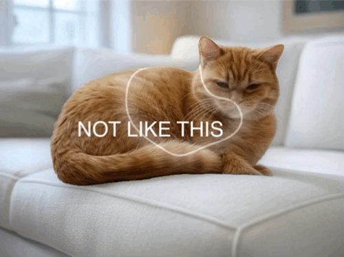
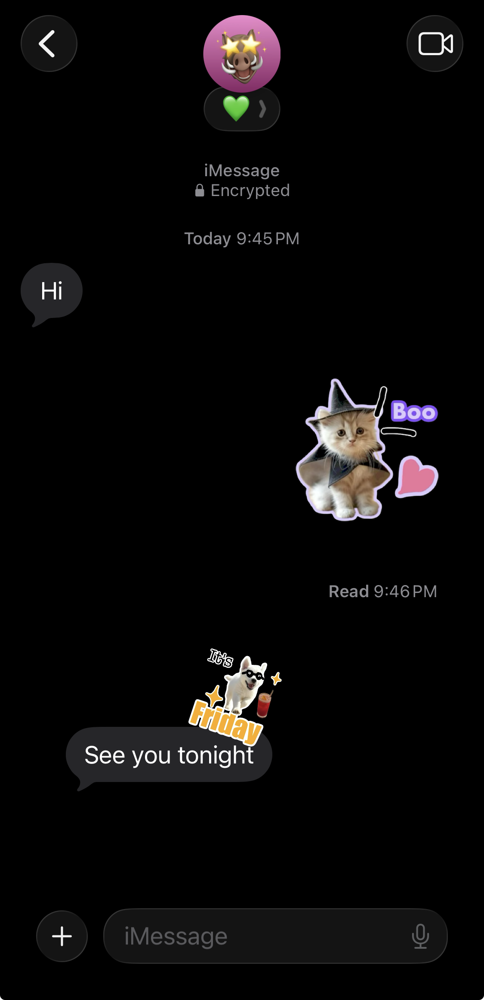

A privacy-first, ultra-lightweight custom sticker maker with text support, manual editing, and zero ads.
Since iOS 17, users can make stickers from photos on iPhone.
With just a long press, Apple’s image lifting feels almost like magic.
However, the system features come with some limitations. If the automatic background removal fails, there’s no way to manually adjust the edges. Also, you can't add texts and doodles to your creations properly, which takes away half the fun.

Expresstic is exactly built to fill these gaps! With a pure native editor, you can layer as many elements as you want—including text, doodles, and images. Every single component can be freely adjusted for size, rotation, and layer order.
This allows for full offline editing and, more importantly, repeatable editing. You can come back to your stickers at any time to tweak the text or change the border colors, without ever worrying about starting all over again.
Access all your custom creations directly from your iOS keyboard, allowing you to share them seamlessly in iMessage, WhatsApp, Telegram, Signal, Messenger, and more. You can even copy and paste stickers directly into Instagram Reels and Stories via the clipboard for instant creative flair.

Making stickers should be fun, private, and frictionless. Expresstic is designed with a tiny footprint, requiring no registration or data tracking. No ads, no clutter—just a pure native experience that gives you full creative control.
I really hope you like it :)